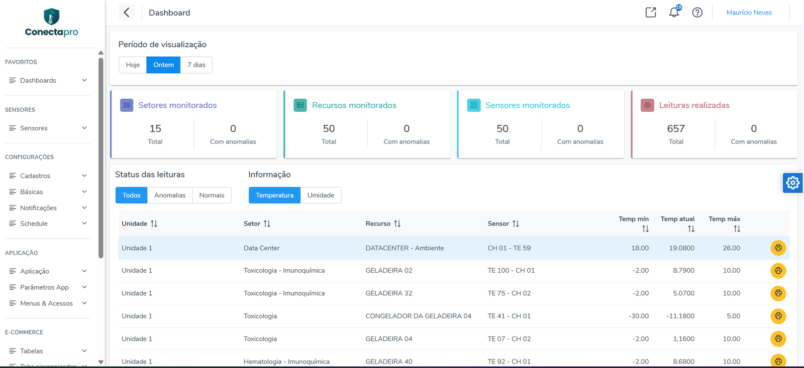
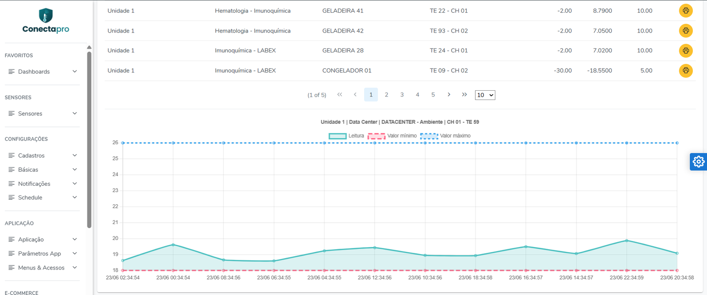
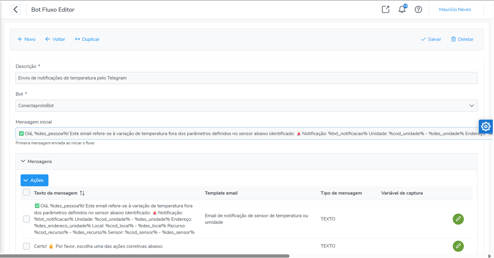
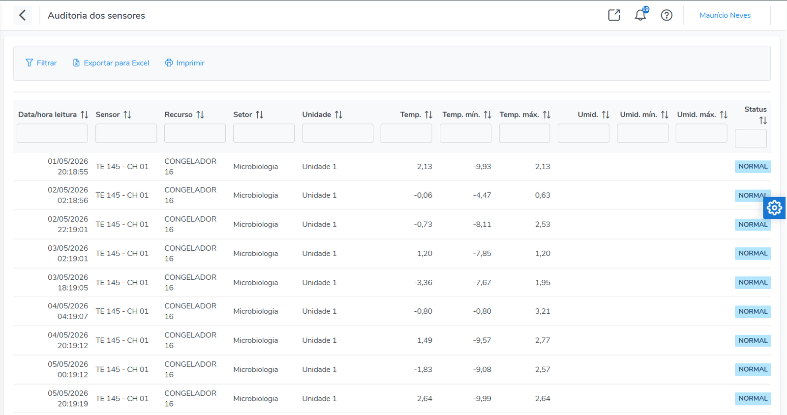

Monitorar
Captura contínua de temperatura e umidade por sensor, na faixa segura de cada equipamento.
Monitorar · Alertar · Comprovar conformidade
Monitoramento contínuo de temperatura e umidade para laboratórios de análises clínicas — do desvio à ação corretiva, com prova de conformidade para a RDC 978/2025 da ANVISA.
Frio e calor — freezers, geladeiras, câmaras frias, estufas e incubadoras.
Visão geral
Plataforma de monitoramento de ambiente (IoT) e gestão da qualidade que acompanha, em tempo real, a temperatura e a umidade de equipamentos críticos — e dispara alertas quando algo sai da faixa segura, com um fluxo estruturado de justificativa e ação corretiva.
Captura contínua de temperatura e umidade por sensor, na faixa segura de cada equipamento.
O alerta certo, na pessoa certa, pelo canal certo — e-mail, Telegram e WhatsApp.
Cada desvio vira registro auditável: justificativa, ação corretiva, autor e horário.
O problema
Excursão de temperatura não percebida a tempo, fora do horário.
Falta de registro contínuo e de evidência de tratamento para a ANVISA.
Quem foi avisado, quando, qual a justificativa e qual a ação tomada?
Alertas repetidos demais acabam ignorados — e o desvio importante passa.
Equipamento que parou de reportar e ninguém percebe a tempo.
Matriz e postos de coleta sem visão consolidada em um só painel.
Conformidade regulatória
Desde junho de 2025, o monitoramento contínuo de temperatura e umidade em equipamentos críticos é obrigatório — o registro manual algumas vezes ao dia não atende mais à norma.
Temperatura e umidade capturadas sem interrupção em geladeiras, freezers e câmaras frias.
Histórico completo de leituras, com resumo diário e exportação em PDF, Excel e CSV.
Cada desvio gera justificativa e ação corretiva com autor, data e hora — pronta para inspeção.
Trilha de auditoria automática e alerta de falhas, de ponta a ponta.
O Conectapro apoia o atendimento aos requisitos da RDC 978/2025 — não constitui, por si só, certificação ANVISA/ISO.
Veja na prática
Do painel em tempo real à evidência pronta para auditoria — veja como cada etapa da RDC 978 acontece na tela.


Monitorar
Cada sensor com valor mínimo e máximo registrados ponto a ponto, além de temperatura mín./atual/máx. consolidada — o histórico contínuo e rastreável que a RDC 978 exige.

Comprovar
O fluxo guiado de notificação e ação corretiva — aqui pelo Telegram — em que o responsável escolhe a ação tomada. É o que transforma um alarme em evidência auditável.

Rastrear
Histórico rastreável por data/hora, sensor, recurso e unidade, com temperatura, limites e status — filtrável, exportável para Excel e pronto para inspeção sanitária.
Funcionalidades
Leituras contínuas por sensor via HTTP, vinculadas à hierarquia física do laboratório.
Identifica leituras fora da faixa e agrupa desvios para evitar fadiga de alarme.
Se um sensor para de reportar, dispara alerta — pega o equipamento desligado.
E-mail, Telegram e painel — com roteamento por pessoa e escopo. WhatsApp em implantação
Justificativa, ação e comentário registrados — evidência pronta para auditoria.
Empresa → unidade → local → recurso → sensor, tudo em um só painel.
Registro automático de alterações: quem mudou o quê, quando, antes e depois.
Resumo diário de leituras e exportação em PDF, Excel (XLSX) e CSV.
Perfis e permissões, 2FA (TOTP), senhas com BCrypt e API REST com JWT.
Por que o Conectapro
Não só alerta: transforma cada desvio em evidência auditável.
Janela de controle de anomalia evita o excesso de alertas.
Pega o “sensor mudo”, não só o valor fora da faixa.
E-mail, Telegram, WhatsApp e painel, com roteamento por escopo.
Hierarquia clara da empresa ao sensor, num só painel.
API REST/JWT, automações e relatórios — não um produto fechado.
Para quem
Fale com a gente para uma demonstração com o parque de equipamentos do seu laboratório. Posso fazer antes um diagnóstico rápido dos pontos da RDC 978, sem compromisso.